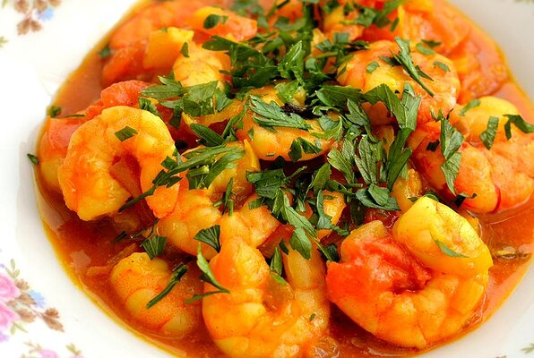

Prawns Curry

DESCRIPTION:
This is a delicious prawns curry. If you want, you can substitute boiled eggs for the prawns. Serve the curry with naan, roti, or plain rice.
INGREDIENTS:
- 1/2 cup rice flour
- 1/2 teaspoon ground turmeric
- salt to taste
- 1 pound peeled and devined prawns
- 3 tablespoons cooking oil
- 1 teaspoon cumin seeds
- 2 large onions, sliced thin
- 2 green chile peppers,halved lengthwise
- 1 tablespoon ginger-garlic paste
- 3 cups puredd tomato
- 1/2 teaspoon kashmiri red chili powder
- 1/2 teaspoon garam masala
- 1/2 teaspoon ground cumin
- 1/4 cup heavy cream(optional)
- 1/4 cup chopped fresh cilantro
DIRECTIONS:
- Stir the rice flour, turmeric, and salt together in a bowl; add the prawns and turn in the flour mixture to evenly coat.
- Heat 3 tablespoons oil in a large skillet over medium heat; fry the cumin seeds in the hot oil until they splutter. Add the onions,
green chile peppers, and ginger-garlic paste; cook until the onions are browned, about 5 minutes. Stir the pureed tomato, Kashmiri red chili powder,
garam masala, and ground cumin into the mixture. Season with salt and continue cooking until the gravy thickens and the oil is released, 10 to 15 minutes.
Pour the cream into the skillet and stir; lie the prawns into the mixture and continue cooking until the prawns are cooked through, 3 to 5 minutes more.
- Garnish with the cilantro to serve.